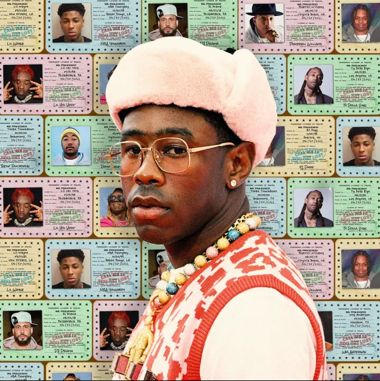
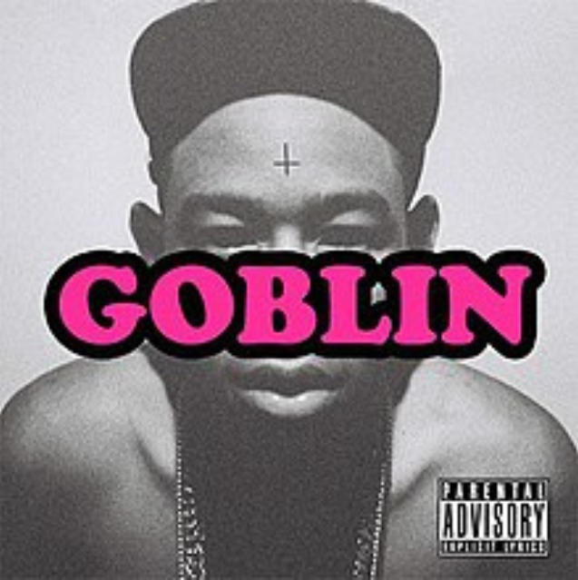
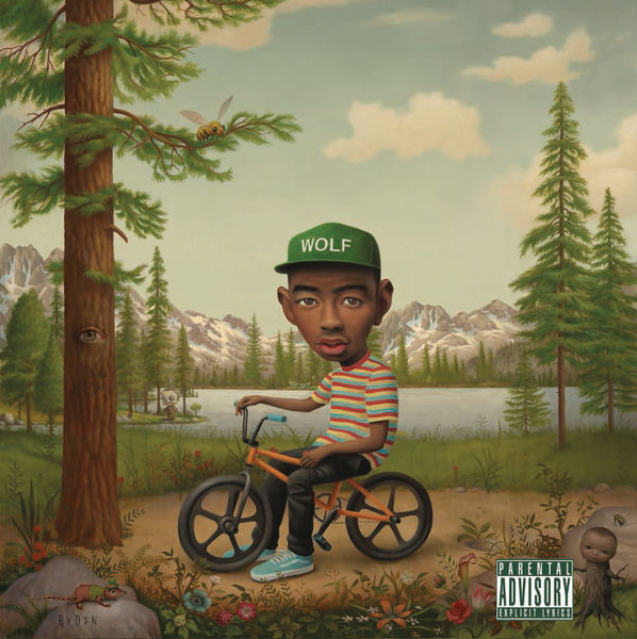
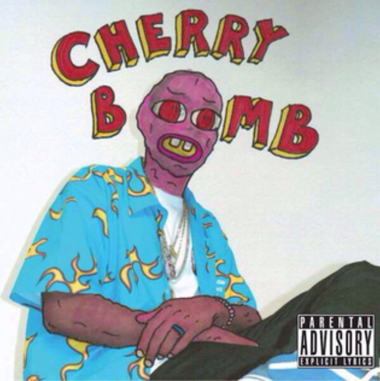
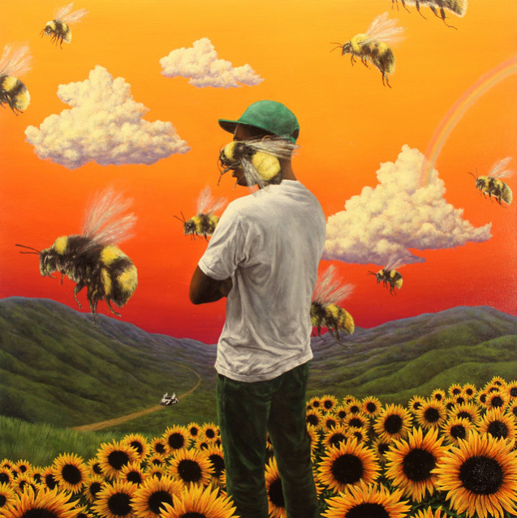
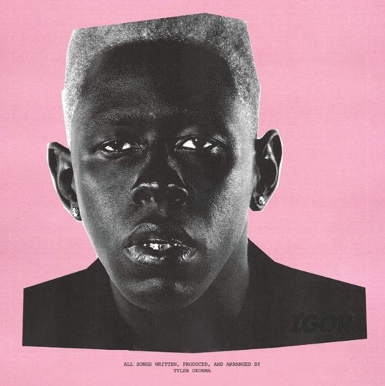
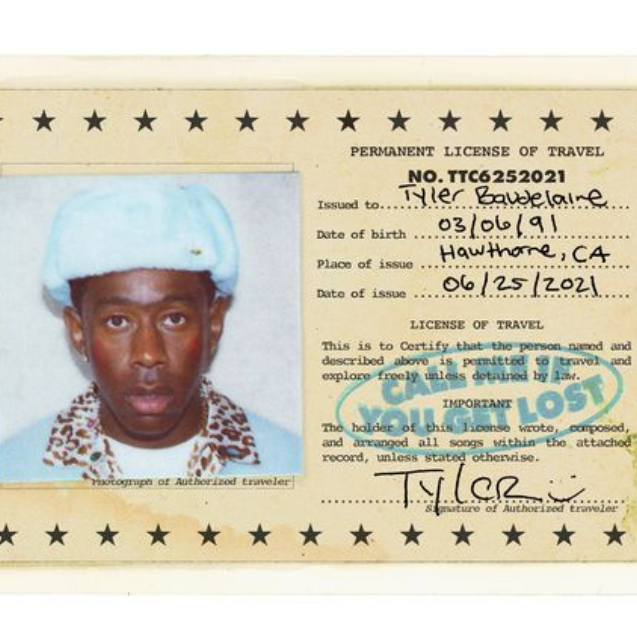

Tyler Okonma est en né en 1991 à Los Angeles, d'une mère afro-américaine et d'un père nigérian. Cependant, il confie à travers ses chansons ne jamais avoir connu ce dernier. Tyler a passé sa jeunesse dans les quartiers d’Hawthorne au sud-ouest du comté de Los Angeles et de ceux de Ladera Heights. Dans son enfance, Tyler prenait des pochettes d’albums et créait des jaquettes pour ses propres albums imaginaires. Projet néanmoins assez sérieux, puisque du haut de ses 7 ans, ses albums possédaient une liste de chansons avec chacune leur durée. Il fréquentera douzaine d'écoles différentes travers Los Angeles et Sacramento. À 14 ans, Okonma apprend de lui-même à jouer du piano.
Principal rimeur du collectif, leader du collectif de hip-hop alternatif Odd Future, membre du groupe EarlWolf avec son confrère Earl Sweatshirt, Tyler produit ses propres albums solos. Son premier est un album non-studio Bastard, publié en 2009. S’en suit un premier studio, Goblin, publié le 10 mars 2011, puis Wolf publié le 2 avril 2013 : tous les deux au label XL. Dans la continuité, son troisième album, Cherry Bomb, publié le 13 avril 2015 ; son quatrième, Flower Boy, le 21 juillet 2017 ; son cinquième, IGOR, le 17 mai 2019, et enfin le dernier en date, Call Me If You Get Lost, sortit le 25 juin 2021. De plus, il est producteur d’Earl Sweatshirt et Florio "Vignes" Genesis. S’ajoute à cela, sa signature de coentreprise avec RED Distribution et Sony Music Entertainment en avril 2011.
     